phone-now-image-32x14
Previous phone overlay used numeric tabs, obscured the office, and did not expose clickable channels or record targets. The compact frame did not show source freshness.
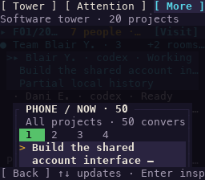
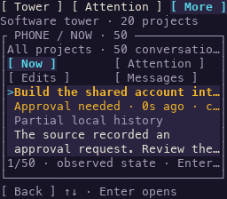
Both are synthetic actual-Ui reconstructions, not terminal-window screenshots. The earlier Request image documents a harness error. Current inventory verdicts
Previous phone overlay used numeric tabs, obscured the office, and did not expose clickable channels or record targets. The compact frame did not show source freshness.


Previous narrow inspector stopped at Enlarge to read work and provided no actual observation or current review action.
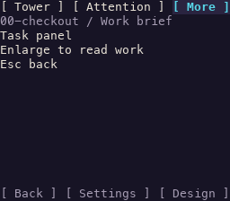

Previous 32-column settings viewport omitted the Advanced row; the requested route could not be reached by its visible action.
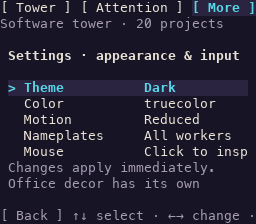
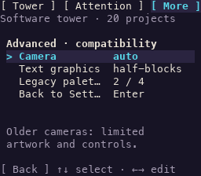
The current request label said Question for you while the old inspection summary described inferred silence; the phone now uses the shared explicit wait explanation.
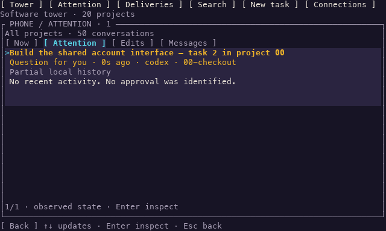
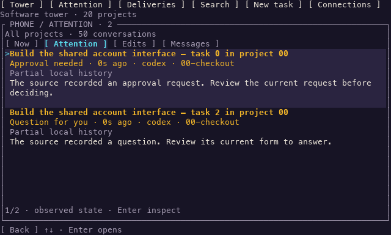
Native light-theme text retained a dark sampled art background in room signs and worker plates. Semantic native panel backgrounds now participate in the same theme mapping.
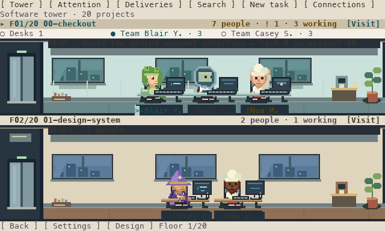
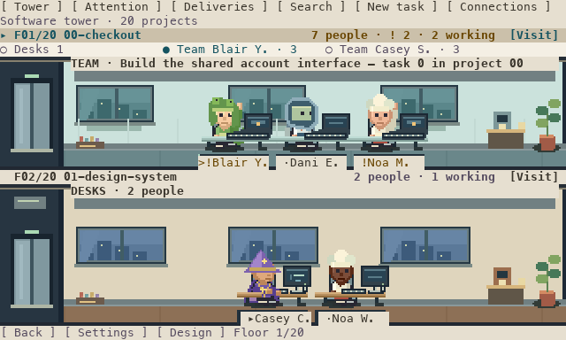
Audit harness defect: the old m then F4 route captured the inline composer, not the request review. The corrected route clicks Review for the exact worker and asserts REVIEW REQUEST.
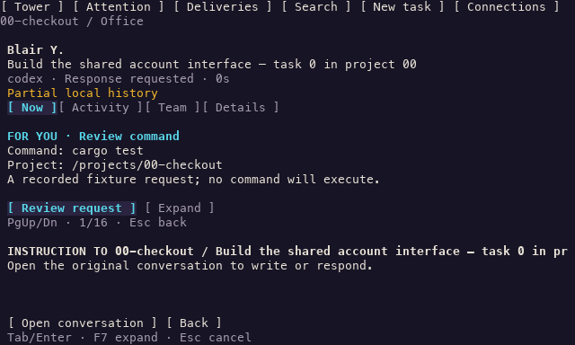
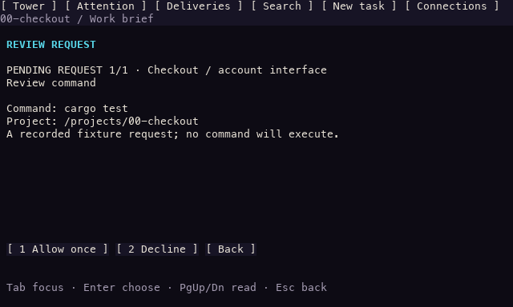